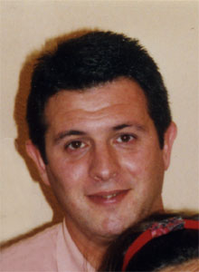

Raúl González Villacián
Raúl González Villacián  Raúl González Villacián
Raúl González Villacián 
 Haz clic aquí para detalles de la Familia de Raúl con Manuela Chamorro García
Haz clic aquí para detalles de la Familia de Raúl con Manuela Chamorro García
This page is within a frameset. View the entire genealogy report of González Villacián families, or surname index of González Villacián pedigrees or report summary of González Villacián heritage from "Árbol Genealógico de Manolo y Amalia".
View a family tree from Gedcom file.
© 2006 GenoPro Inc. All Rights Reserved.